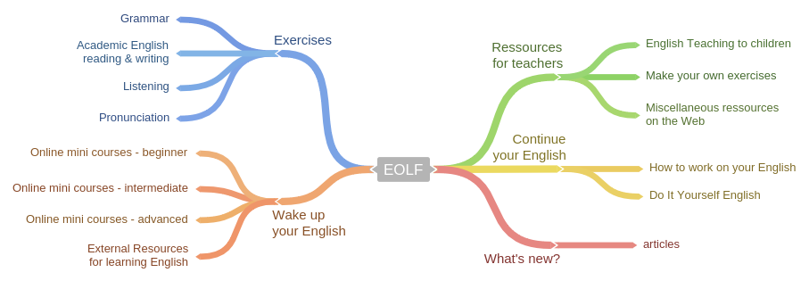
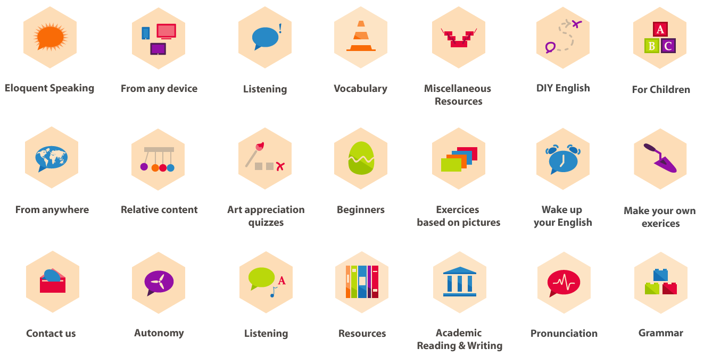
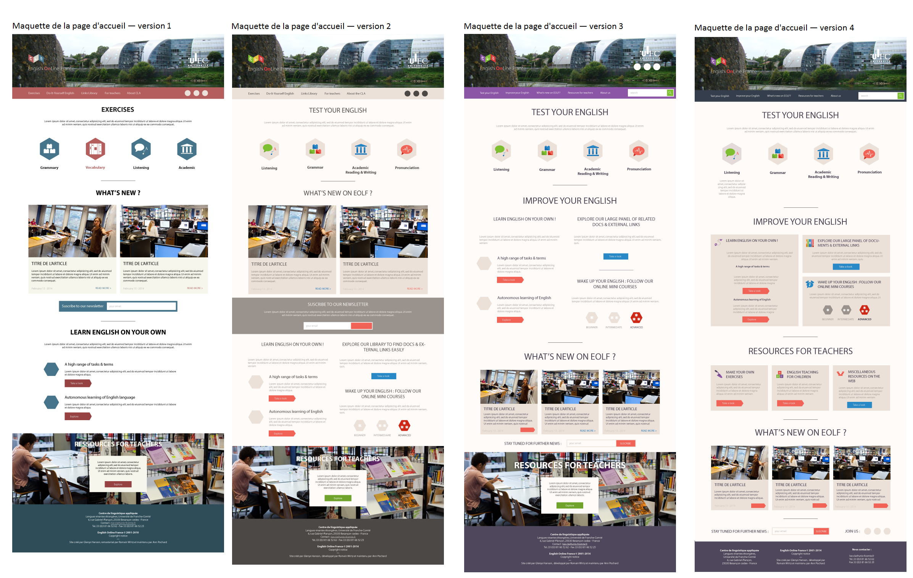

Le site d'English Online France a été conçu dans le but de promouvoir l'apprentissage de la langue anglaise sur l'internet.
Rédigé et tenu par des professionnels de l'enseignement de la langue anglaise, ce site propose un contenu pédagogique de qualité.
Voir le siteAudit
Conception
Développement
Intégration
Formation
Le travail donné consiste à concevoir des maquettes d'interfaces numérique du prochain site du département des Métiers du Multimédia et de L'Internet.
Ces interfaces sont réalisés suivant un système de grille. Le rendu des mock-ups se fait notamment à travers l'usage d'un logiciel de wireframing Axure Pro en plus d'un logiciel d'édition de visuel comme Adobe Illustrator. Il est aussi convenu de respecter à travers la réalisation des maquettes une cohérence dans la navigation au sein du futur site MMI.
L'ancienne version telle qu'elle était avant mon intervention est consultable en cliquant sur le lien ci-dessous :
Voir l'ancienne versionLe projet met en évidence 4 modèles distincts selon l'architecture de l'information définie au préalable. Les projets, la page d'accueil, les formations puis les actus.
Les modèles de page sont présenté ici dans l'ordre dans lesquels ils viennent d'être énumérés.
Une série de pictogrammes
Un nouvelle façon de naviguer
Une harmonie colorée vivante
Un menu déroulant, une barre de recherche, l'ajout de contenu spéciaux comme les exercices réalisés avec HotPotatoes.
L'utilisation d'un nouveau CMS et des fonctionnalités artisanales que j'ai intégrées comme l'ajout de nouveaux exercices.
Ce projet a répondu à la demande de l'établissement dans son intégralité et a été accompli dans les délais. Une fièreté !
Lire la lettre de recommandation